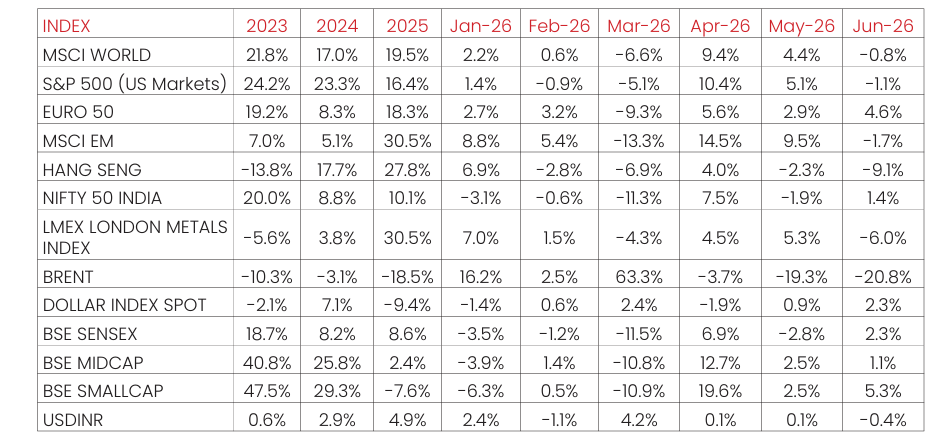

Macro and
Equity Market
Outlook
Equity Market
Outlook
GLOBAL MACRO & MARKETS
India’s NSE NIFTY 50 Index ended the month of June 2026 in green
(1.35%). Among major global indices, the Japanese NIKKEI (+5.6%),
Morgan Stanley Capital International (MSCI) World (-0.8%), the Euro 50
(+4.60%) and the S&P 500 (-1.1%) ended the month of June 2026 with
mixed returns. Performance fell among Emerging Market (EM) indices in
June 2026, with the MSCI EM, Hang Seng, BOVESPA Brazil recording
sequential returns of (-1.7%), (-9.1%), and (-1.0%) respectively.
The London Metals Exchange (LME) Metals Index fell (-6.0%) in June 2026.
West Texas Intermediate (WTI) in red MoM, by (-20.4%) and Brent Crude
fell MoM, by (-20.8%), respectively, as markets remained cautious given
geopolitical uncertainty.
The Dollar Index rose by (+0.9%), through June 2026, with the US Dollar
(USD) appreciating vis-à-vis Emerging Market (EM) currencies (-2.3%) and
depreciating marginally against the Indian Rupee (INR) on the spot market
(-0.4%). Bond yields moved unevenly, with India’s 10Y G-Sec yields fell by
25.40 bps, while US 10Y G-Sec yields climbing 2.97 bps, and the German
Bund yield fell by -7.80 bps, with rates settling at 6.75%, 4.46% and 2.86%,
respectively.
Domestic Macro & Markets
The BSE SENSEX climbed (+2.30%) in June 2026, in line with the NSE NIFTY
Index. The BSE Mid-cap index & the BSE Small-Cap index, rising by (+1.1%)
& (+5.3%), over the month of June 2026, respectively. Sector-wise, Banks,
Realty and Healthcare were the top outperformers over the month of June
2026, clocking (+6.0%), (+6.0%) and (+5.0%) respectively. BSE Sensex’s 13
major sectoral indices posted mixed performance in June 2026.
Net Foreign Institutional Investors (FII) flows into equities were negative
for June 2026 at (-$3.2 Bn), following (-$3.45 Bn) in May 2026. Domestic
Institutional Investors (DIIs) remained net buyers of Indian equities for the
34th consecutive month with flows of (+$8.3) Bn in June 2026 compared
to (+8.67 Bn) in June 2026.
India's high frequency data update:
Manufacturing Purchasing Managers Index (PMI) strengthened, GST
collections remained robust on import revenue, core sector and industrial
output rebounded, credit growth stayed elevated despite a slight
moderation, while inflation edged higher and the trade deficit widened.
Purchasing Managers’ Index Manufacturing PMI:
India’s Manufacturing PMI for June 2026 eased to 54.2, down from 55.0 in
May, marking the second-weakest expansion in four years. While the sector
remained firmly in growth territory, softer demand - especially weaker export
orders to Europe- dragged on output, new orders, and employment.
Goods and Services Tax (GST) Collection:
Gross collections of INR 1.94 Tn (+13.9% YoY) in June 2026 the Gross
Domestic Revenue stood at Rs 1.35 lakh crore, rose +6.5%, while Gross
Import Revenue stood at Rs 0.60 lakh crore, marking a sharp rise of 34.6%
during the month.
Core Sector Production:
The index of eight core sector industries grew moderately (+0.5% YoY) in
May 2026, against a (+1.7% YoY) growth in April 2026. The production of
Electricity, Cement and Steel recorded growth in May 2026. The
production of Electricity, Cement and Steel recorded growth in May 2026
by (+8.7% YoY), (+8.4% YoY) and (+5.0% YoY) respectively.
Industrial Production:
Factory output growth as measured by the Index of Industrial Production
(IIP) grew YoY by (+5.1%) in May 2026, vs a growth of (+4.9%) YoY in April
2026. The growth rates of the Four sectors, Mining & Quarrying,
Manufacturing, Electricity & Gas Supply and Water Supply, Sewerage &
Waste Management for the month of May 2026 are (-1.6%), (+5.5%),
(+9.9%) and (+5.5%) respectively.
Credit growth:
Scheduled Commercial Bank Credit growth in June 2026 increased
marginally to (+17.7 %) YoY vs (+16.2%) YoY in May 2026. Agriculture and
allied activities credit in May 2026 grew by (+14.9%) YoY, while industrial
sector credit grew by (+17.5%) YoY, the services sector credit grew by
(+20.4%) YoY.
Inflation:
For May 2026, the Consumer Price Index (CPI) inflation rate rose YoY to
(+3.93%), up from (+3.48%) in April 2026. Food inflation accelerated
further to (+4.78%) YoY, compared to (+4.20%) in April. The Wholesale
Price Index (WPI) inflation remained elevated at around (+9.7%) YoY
compared to (+8.3%) YoY in April 2026. The positive rate of inflation in May
2026 was primarily due to increases in prices of mineral oils, crude
petroleum & natural gas, basic metals, jewellery, vegetables, and housing
costs, while deflationary trends were observed in items like potatoes, peas,
and motor vehicles.
Trade Deficit:
Indian Merchandise Exports rose by (+18.0%) YoY to $45.20 Bn in May
2026. Imports rose by (+20.0%) YoY to $73.41 Bn. Merchandise+ services
trade deficit fell to (-$10.51) Bn, up from (-$28.38) Bn in April 2026 and
(-$6.79) Bn a year earlier.
Events to watch out for in July 2026
RBI MPC Meeting:
The Reserve Bank of India’s policy review will be closely
watched as CPI inflation remains near 4%^ and food prices show stickiness
due to monsoon variability. With repo rates steady at 5.25%$, the
committee’s commentary on liquidity and growth may influence bond
yields, banking stocks, and credit markets. The next MPC meet is expected
to be held from 3-5 August, 2026.
Corporate Earnings Season (mid-July onwards):
Q1 FY27 results begin
with IT majors, followed by banks and industrials. Earnings will provide
clarity on margins, credit growth, and global demand trends. Investor
sentiment may hinge on management commentary around rural demand,
monsoon-linked consumption, and export outlook.
Inflation & IIP Data (mid-July):
June CPI and IIP releases will be critical for
gauging domestic momentum. CPI trends may shape RBI’s stance on rate
cuts, while IIP will highlight industrial output strength or weakness. WPI
data will also be tracked, especially for fuel and metals.
ITR Filing Deadline (July 31):
The last date for filing income tax returns
for FY 2025–26. Liquidity flows may be influenced by advance tax
payments and filing activity, with penalties for late submission adding
pressure.
Global Cues:
US Fed commentary on inflation and interest rates may
potentially drive capital flows into emerging markets. Crude oil prices
remain a key risk for India’s import bill, while geopolitical tensions in the
Middle East and Europe: particularly the US-Israel-Iran conflict and the
Russia-Ukraine war-continue to disrupt global trade flows and commodity
markets. These developments may be expected to weigh on investor
sentiment and India’s external balances through the quarter.
Monthly Performance for Key Indices:

Source:NIMF Research, Bloomberg, RBI
Note: Market scenarios are not reliable indicators for current or future performance. The same should not be construed as investment advice or as any research report/research recommendation.
Past performance may or may not be sustained in future.
Note: Market scenarios are not reliable indicators for current or future performance. The same should not be construed as investment advice or as any research report/research recommendation.
Past performance may or may not be sustained in future.
Market View
Domestic equity markets have remained range-bound with intermittent
bouts of volatility. Sentiment improved as tensions between the U.S. and Iran
eased, which led to softer energy prices and improving global risk sentiment.
Lower crude oil prices, relatively stable rupee, healthy corporate balance
sheets and expectations of supportive monetary policies have provided
support to markets. However, any escalations in geopolitical events could
keep the markets volatile.
The Indian Rupee has remained relatively stable against the U.S. Dollar
despite occasional fluctuations caused by global investment flows, while
inflation has continued to ease, providing comfort to policymakers.
While these factors may contribute to near-term market fluctuations,
improving domestic demand, ongoing government capital expenditure and
easing financial conditions may expected to support India's medium-term
growth outlook.
Following the market correction over the past several months valuations
have become more reasonable particularly within the large-cap segment.
While near-term earnings may face pressure from elevated input costs,
currency weakness and softer global demand the medium- to long-term
structural growth drivers for India remain intact.
Given geopolitical challenges and its implications, long term investments
may be invested systematically using the current corrective phase of the
market. Fluctuations in commodity prices, supply chain disruptions, currency
movements and global growth concerns are near term factors which may
delay recovery. Hence a systematic approach to adding allocations might
help in potentially lowering the anticipated volatility. The impact of war is
visible on select segments; delayed resolution could lead to downgrade in
earnings.
Asset allocation in line with the risk appetite of the investor is an important
tool to navigate any unanticipated volatility. Accordingly Large Cap & Large
Cap oriented diversified strategies along with hybrid funds might appear to
be better placed on risk-reward basis, while Mid/Small cap allocation may be
considered in a staggered manner through systematic investment with a
long-term view.
Gold & Silver Outlook
After a strong five-year rally, gold (near US$4,200/oz) and silver (around US$65/oz) have entered a
consolidation phase. The pullback is likely due to firmer inflation data, expectations of higher interest
rates and a rotation from defensive assets into equities. However, the structural drivers behind both
metals may remain firmly in place.
Gold: The Case for Strategic Ownership
Gold continues to be potentially supported by three key pillars. First, rising sovereign debt levels
across both developed and emerging economies reinforce the appeal of an asset with no credit or
counterparty risk. Second, central banks remain significant buyers as they diversify reserves away
from the US dollar. Third, gold retains its role as portfolio insurance against inflation, financial
instability, and geopolitical uncertainty.
An additional structural theme is emerging from global bond markets. As Japanese yields normalize,
domestic investors may reduce purchases of overseas sovereign debt, potentially pushing global term
premia higher. In this environment, gold may potentially serve as an alternative asset as confidence
in government debt is reassessed.

Risks remain. Jewellery demand, particularly in India, has weakened due to elevated prices, while
higher real yields reduce the attractiveness of a non-yielding asset. Temporary liquidity events may
also trigger selling. The most significant near-term risk, however, could be a stronger US dollar,
which typically weighs on both gold and silver prices.
Silver: The Higher Beta Metal:
Silver shares many of gold’s monetary drivers but benefits from a powerful
industrial demand story. Its use in solar panels, electronics, electric vehicles, power infrastructure, and
AI-related data centres gives it a unique dual monetary-industrial character.
Dollar rebound in the near-term may potentially lead to further volatility and further declines in gold
and silver, however, long term investors, consolidation may be an opportunity to potentially build
strategic exposure.
Note: Market scenarios are not reliable indicators for current or future performance. The same should not be construed as investment advice or as
any research report/research recommendation.
Past performance may or may not be sustained in future.
Past performance may or may not be sustained in future.
Source:
NIMF Research,Bloomberg
Disclaimer:
The current fund philosophy may change in future depending on market conditions or fund manager’s
views. The sectors mentioned are not a recommendation to buy/sell in the said sectors. The information
herein above is meant only for general reading purposes and the views being expressed only constitute
opinions and therefore cannot be considered as guidelines, recommendations or as a professional
guide for the readers. The document has been prepared on the basis of publicly available information,
internally developed data and other sources believed to be reliable. The sponsors, the Investment
Manager, the Trustee or any of their directors, employees, Associates or representatives (‘entities &
their Associate”) do not assume any responsibility for, or warrant the accuracy, completeness, adequacy
and reliability of such information.
Recipients of this information are advised to rely on their own analysis, interpretations & investigations.
Readers are also advised to seek independent professional advice in order to arrive at an informed
investment decision. Entities & the associates including persons involved in the preparation or issuance
of this material, shall not be liable in any way for any direct, indirect, special, incidental, consequential,
punitive, or exemplary damages, including on account of lost profits arising from the information
contained in this material. Recipient alone shall be fully responsible for any decision taken on the basis
of this document.